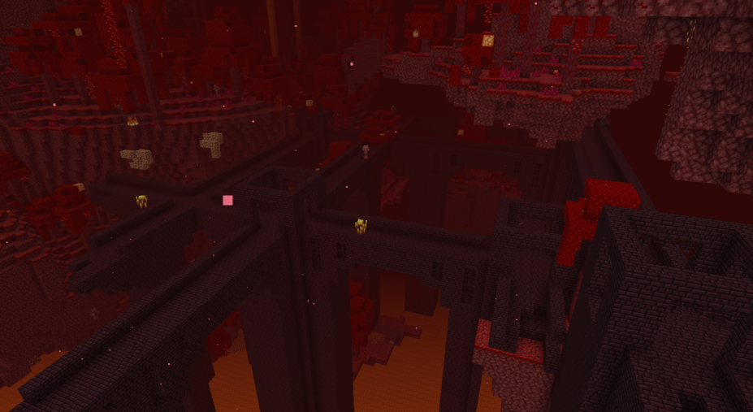

Welcome!
Welcome to Speedy Peck's guide to Minecraft Speedrunning! Here you will learn about
the tips and tricks you will need to be able to complete your first speedrun on a random seed
on Java edition. Individual speeds may vary, but this should be everything you need to know
in order to achieve a sub-40 minute run.
Some tips and tricks:
- Use version 1.16.1: they changed a lot about piglin trading and bastion remnants. It will make your life much easier to play on this version.
- Change your gamma to 5. It is completely speedrun legal, and it makes it so that you can see underwater and in caves. This can be done by opening your .minecraft folder which by default can be found with windows key + R, and %appdata%/.minecraft on Windows or on Linux and Mac it can be found in your home folder
- Use your sprint hotkey (by default Ctrl) to sprint rather than double tapping 'W'.
- Use some hotkeys for your hotbar. Scrolling around is easier, but if you get used to using your hotkeys to navagate your hotbar, you can go much faster. (also, you should probably change at least the last three slots to something closer to your hand than 7, 8, and 9.)
Minecraft speedrunning is HARD. You will fail a lot, and you will die a lot (in game, not in real life.) You will need patience, as you would when developing any other skill. The best runners have spent thousands of hours perfecting their craft. Don't expect to be an expert overnight. Don't expect to be an expert after just reading this. You will need some practice. without it you won't make much progress.

